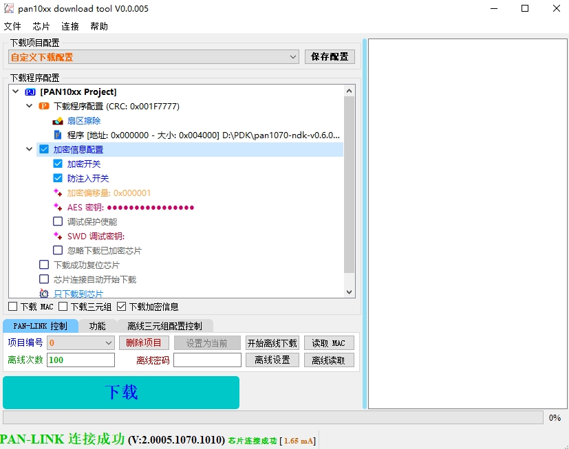
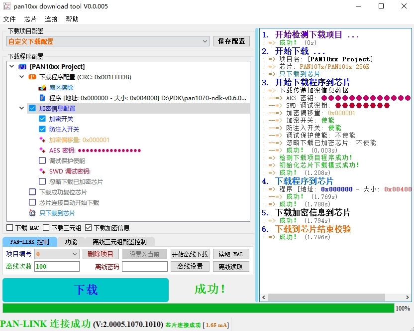
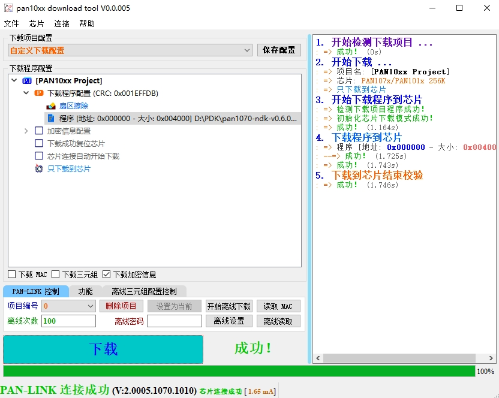
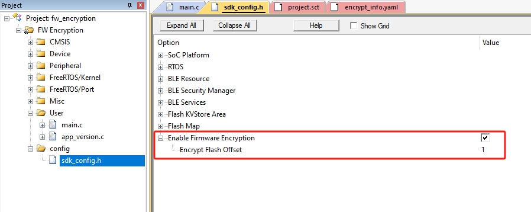
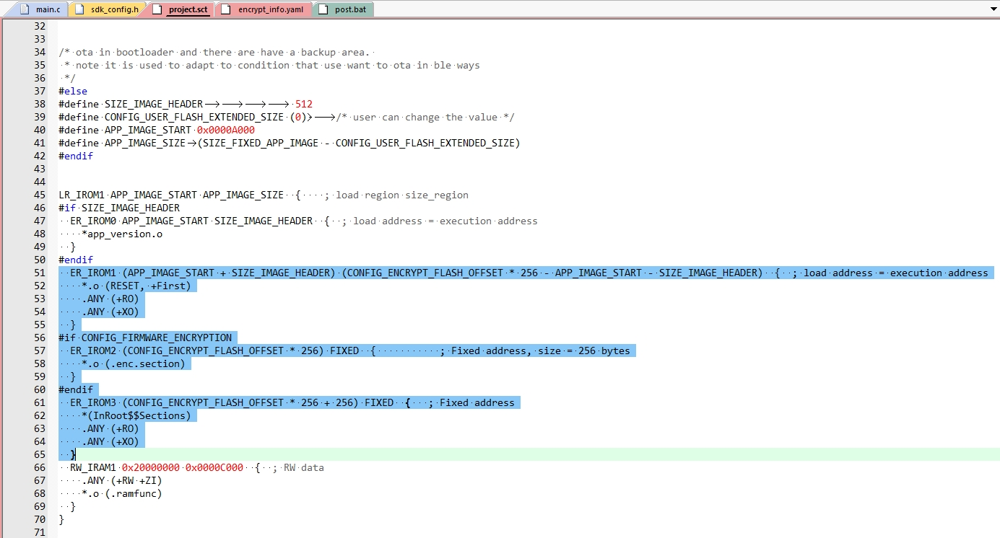
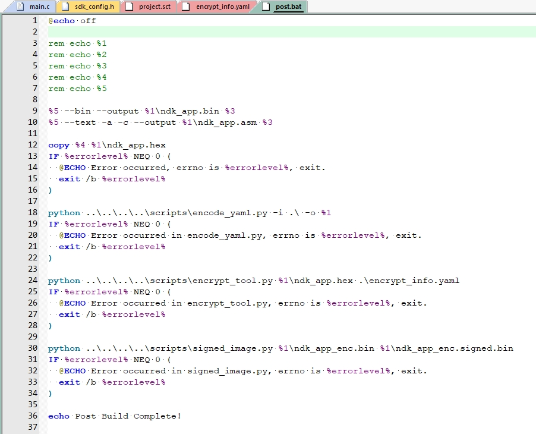
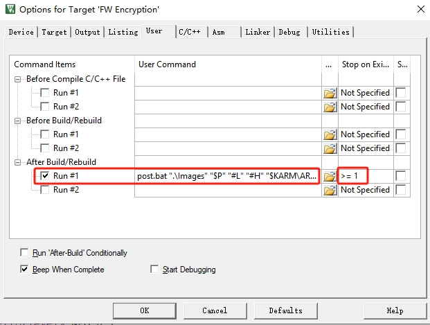
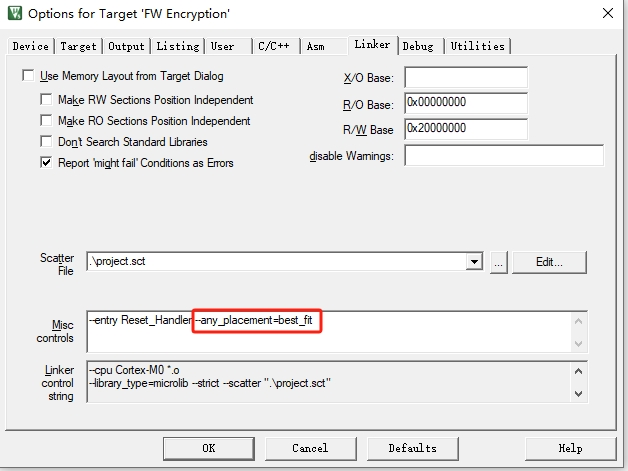
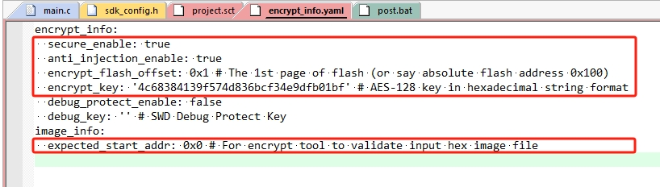

Firmware Encryption¶
1 功能概述¶
本例程演示芯片通过固件加密、硬件解密的机制保护 Flash 关键代码的方法。
重要
本功能需要用到 PanLink 量产烧录工具，为正常演示本例程，请确保您的 PanLink 上位机工具版本不低于 v0.0.005。
警告
本功能需要通过 PanLink 工具烧录芯片 eFuse 的特定地址，eFuse 的物理特性是同一地址只可烧录一次，无法还原，因此当某颗芯片使能加密功能后，其将只能正常运行加密后的固件，无法再正常运行普通的明文固件！
2 环境准备¶
硬件设备与线材：
PAN107X EVB 核心板与底板各一块
JLink 仿真器（用于烧录例程明文程序）
PanLink 量产烧录工具（用于烧录固件加密信息至芯片 eFuse，以及烧录例程加密程序至芯片 Flash）
USB-TypeC 线一条（用于底板供电和查看串口打印 Log）
杜邦线数根或跳线帽数个（用于连接各个硬件设备）
硬件接线：
将 EVB 核心板插到底板上
使用 USB-TypeC 线，将 PC USB 插口与 EVB 底板 USB->UART 插口相连
使用杜邦线将 EVB 底板上的 TX 引脚接至核心板 P16，RX 引脚接至核心板 P17
根据情况将 PanLink 或 Jlink 仿真器连接至芯片
PC 软件:
串口调试助手（UartAssist）或终端工具（SecureCRT），波特率 921600（用于接收串口打印 Log）
PanLink 上位机工具
3 编译和烧录¶
例程位置：<PAN10XX-NDK>\01_SDK\nimble\samples\security\fw_encryption\keil_107x
双击 Keil Project 文件打开工程，编译成功后，使用 Keil - Flash Download 按钮，向未使能加密功能的芯片中烧录明文程序。
注：本例程编译过程中会调用
nimble\scripts\encrypt_tool.py脚本，此脚本中使用了一些第三方库: IntelHex、PyYAML、Crypto，需要提前安装。 Windows 下安装此库的方法是：
直接在 CMD 命令行中执行
pip install intelhex pyyaml pycryptodome重新编译例程，检查是否能编译通过
若仍无法正常编译，提示 Crypto 库未识别，则请进入 python 安装目录的第三方库子目录
<python-folder>/Lib/site-packages，查看此目录下是否有名为Crypto的子目录，并确认其首字母C为大写，如果不是，则手动将其改为大写再次编译例程即可
4 例程演示说明¶
通过 Keil 将明文程序烧录至芯片后，可以看到芯片通过串口打印如下 Log：
Try to load HW calibration data.. DONE. - Chip Info : 0x1 - Chip CP Version : 255 - Chip FT Version : 6 - Chip MAC Address : E11000001012 - Chip UID : 250001465454455354 - Chip Flash UID : 4250315A3538380B005B474356033C78 - Chip Flash Size : 512 KB Hello World! Secret calcucation result: 0x4604b510
断开 JLink 与芯片的连接，然后将 PanLink 连接至芯片（可能需要将芯片从 EVB 底板取下），打开 PanLink 上位机工具，使能 “加密信息配置”，并同时选择载入以下两个文件：
本例程生成的加密配置信息文件（
Images\encrypt_info_enc.bin）本例程生成的未加密固件（
Images\ndk_app.bin或Images\ndk_app.hex）

PanLink 载入加密配置信息文件和未加密固件完成¶
具体操作步骤请参考 PanLink 上位机工具文档。
点击 “下载” 按钮，即可将本工程的加密配置信息（包括加密使能开关、防注入保护使能开关、加密 Flash 区域配置、加密秘钥等）和明文固件分别烧录到芯片 eFuse 和 Flash 中：

PanLink 烧录加密配置信息文件和未加密固件成功¶
eFuse 烧录成功后，复位芯片，可以看到刚才可以正常执行的程序，此时出现了 Hardfault
Try to load HW calibration data.. DONE. - Chip Info : 0x1 - Chip CP Version : 255 - Chip FT Version : 6 - Chip MAC Address : E11000001012 - Chip UID : 250001465454455354 - Chip Flash UID : 4250315A3538380B005B474356033C78 - Chip Flash Size : 512 KB Hello World! In Hard Fault Handler r0 = 0x20001cf0 r1 = 0x40003000 r2 = 0x1 r3 = 0x1941 r12 = 0x0 lr = 0x1947 pc = 0x10a psr = 0x61000000
这是因为芯片此时已经开启了加密使能，当程序执行到 eFuse 中配置的 Flash 加密区域后，会使用秘钥先将程序解密后运行，而此时由于 Flash 中的程序是明文程序，因此经过解密操作后反而会出错。
重新配置 Panlink，此时我们取消勾选 “加密信息配置”，并且在 “下载程序配置” 中，指定烧录的 Image 为
Images\ndk_app_enc.bin或Images\ndk_app_enc.hex文件，然后点击 “下载” 按钮，将加密后的 Image 烧录至芯片：
PanLink 烧录加密固件¶
再次复位芯片，可以看到此时程序又可以正常执行：
Try to load HW calibration data.. DONE. - Chip Info : 0x1 - Chip CP Version : 255 - Chip FT Version : 6 - Chip MAC Address : E11000001012 - Chip UID : 250001465454455354 - Chip Flash UID : 4250315A3538380B005B474356033C78 - Chip Flash Size : 512 KB Hello World! Secret calcucation result: 0x4604b510
5 开发者说明¶
5.1 工程配置¶
本工程相比与其他的普通工程（如蓝牙例程），在配置上有如下改动：
修改了 SDK Config 配置（
configuration\sdk_config.h），新增了打开加密功能及配置 Flash 加密区域的 Config：
SDK Config File¶
注：此处配置的
Encrypt Flash Offset值一定要与 encrypt_info.yaml 文件中配置的encrypt_flash_offset值相同！修改了工程的分散加载文件 (
project.sct)，新增了可配置的加密区域：
Project Scatter File¶
修改了工程的
post.bat脚本，以支持生成的加密后的 Image 文件：
Post Build Script File¶
修改了工程的 After Build 命令，在编译完成后自动调用修改后的 post.bat 脚本：

Keil After Build Command¶
修改了工程的 Linker 链接参数，新增了
--any_placement=best_fit参数：
Keil Linker Control¶
注：此选项在默认的例程配置（
sdk_config.h: Encrypt Flash Offset = 0x1）下不是必须的，但是，若修改加密区域 Offset 到 Image 比较靠后的位置， 则应指定此链接选项，以提示链接器最大化安排 Flash 空间，否则链接器可能会出现浪费 ER_IROM1 Section 空间（在project.sct中定义）的情况。新增了加密信息配置文件（encrypt_info.yaml）:

Encrypt Info File¶
其中各个 item 解释如下：
secure_enable: true：使能固件加密功能anti_injection_enable: true：使能防注入保护功能，与固件加密功能结合使用，作用是防止通过 SWD Debug 的方式获取到加密 Flash 区域的明文信息encrypt_flash_offset: 0x1：配置加密 Flash 的第几个 Page（大小 256 字节），如 0x1 表示加密 Flash 的第 1 个 Page，对应 Flash 绝对地址为 0x100；注意此处配置的值一定要与 sdk_config.h 中配置的 Encrypt Flash Offset 值相同！encrypt_key: '4c68384139f574d836bcf34e9dfb01bf'：配置加密秘钥（AES-128）debug_protect_enable: false：不使能 SWD Debug Protect 功能debug_key: ''：不配置 SWD Debug Protect 秘钥expected_start_addr: 0x0：配置当前 Image 固件的起始地址为 0x0，用于 encrypt tool 交叉验证输入 Image 的地址是否有效
警告
本文件中包含明文的加密秘钥（encrypt_key），一定要妥善保管，不可随意外传，以防密钥泄露！
在编译过程中，Keil 的 After Build 流程会基于本文件生成一个二次加密后的
encrypt_info_enc.bin文件，此文件中会对秘钥添加扰码，因此在 PanLink 载入加密信息的过程中建议使用此文件，而不是明文的 yaml 文件。
5.2 程序代码¶
5.2.1 主程序¶
主程序 app_init() 函数内容如下：
void app_init(void)
{
#if CONFIG_BOOT_ENABLE
print_version_info();
#endif
uint32_t secret_calc;
printf("\nHello World!\n\n");
encrypted_test_function(&secret_calc);
printf("Secret calcucation result: 0x%x\n", secret_calc);
}
若当前工程配置为非裸机程序（即支持 Bootloader 的程序），则打印 App 版本信息
向串口打印 “Hello World” 字符串，用于指示主程序执行成功
执行 Flash 加密区域的函数
encrypted_test_function()向串口打印上述加密函数返回的
secret_calc变量值
5.2.2 加密程序¶
编译到 Flash 加密区域的函数内容如下：
ENCRYPT_SECTION void encrypted_test_function(uint32_t *calculation)
{
/* Do some secret operations/calculations here */
*calculation = *(uint32_t *)((uint32_t)(&encrypted_test_function) & 0xFFFFFFFE);
printf("Hello from %s!\n\n", __func__);
}
使用前缀
ENCRYPT_SECTION以将函数编译到 Flash 加密区域获取当前函数的首地址，并从首地址所在位置取出一个 word 数据，将其通过
calculation指针传到上层向串口打印字符串
芯片支持加密的 Flash 大小为一个 Page（256 字节），因此在实际项目中我们应当选取一个重要且简短的函数作为加密函数段。